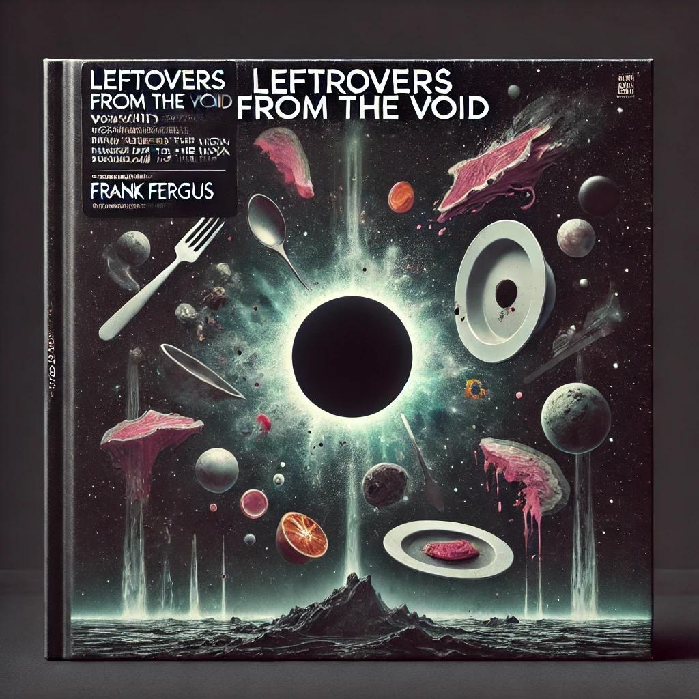
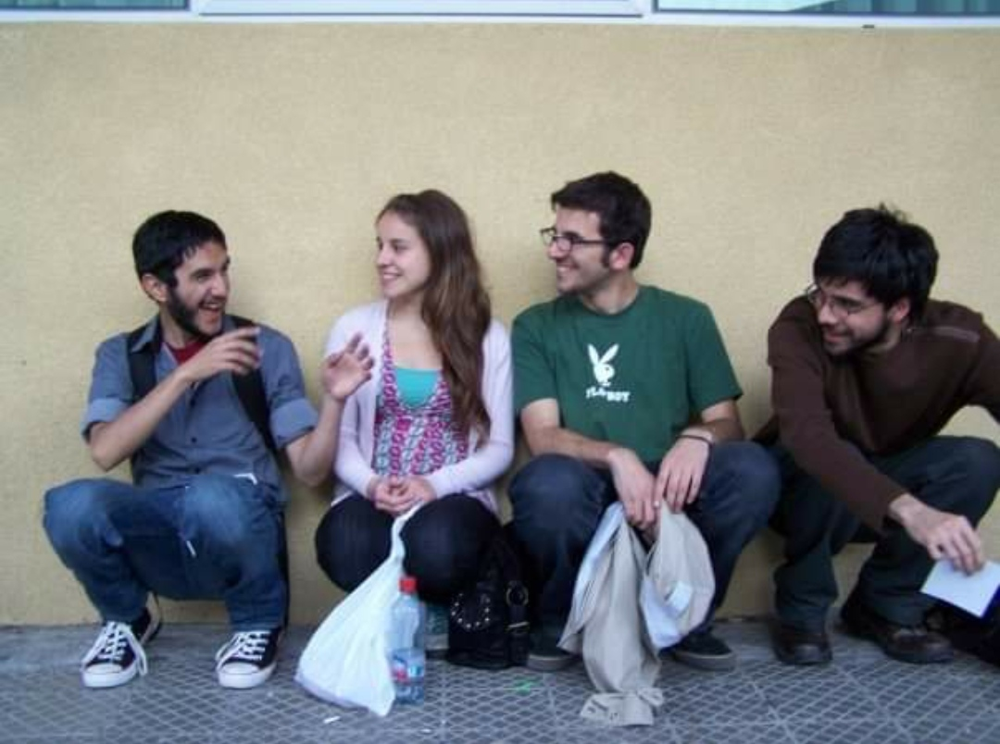

De las Cenizas al Renacimiento: Frank Fergus Transforma el Drama en Música Tras 15 Años de Silencio
Han pasado quince largos años desde que Frank Fergus, la banda que revolucionó la escena indie con su icónico álbum You Cannot Have That Much Butter, se disolviera en medio de rumores y controversias. Lo que parecía el fin definitivo fue, en realidad, el inicio de un largo periodo de reflexión y distanciamiento. Hoy, como un fénix renacido, regresan con un nuevo trabajo que, sorprendentemente, está inspirado en aquel fatídico evento culinario. En esta entrevista exclusiva, Cano, Beñi, Jimmy y Leonardo nos cuentan cómo lograron convertir un dramático malentendido en arte.
¿Qué ocurrió realmente esa noche en la casa de Cano?
Cano: "Fue una locura. Decidimos celebrar el éxito de You Cannot Have That Much Butter con una fiesta en mi casa, cada uno cocinando un plato especial. Lo que no sabíamos es que habíamos creado una bomba tóxica culinaria..."

¿Cómo impactó este incidente en la dinámica del grupo?
Cano: "Fue devastador. Todos estábamos enfadados y desconfiados. Pensábamos que la culpa era del otro, y eso generó una tensión enorme..."
Ahora, años después, vuelven con un álbum inspirado en ese evento. ¿Qué los llevó a convertir ese trauma en música?
Cano: "Con el tiempo, empezamos a ver el humor en lo que había pasado. Nos dimos cuenta de que habíamos dejado que una situación ridícula nos destruyera..."
¿Cómo describirían este nuevo álbum comparado con otros artistas?
Leonardo: "Para mí, es como si ABBA hubiera hecho un disco conceptual después de una cena envenenada. Piensa en una mezcla entre 'Mamma Meatball' y 'Dancing Bean.'..."
Beñi: "No sé en qué estás pensando, Leonardo. Este álbum es puro rock. Es como si AC/DC hubiera decidido hacer un álbum entero sobre comida peligrosa..."
Cano: "Yo lo veo más como si Madonna hubiera hecho un regreso épico después de una experiencia cercana a la muerte..."
Jimmy: "Chicos, no sé en qué mundo viven, pero este álbum tiene la vibra de Chico Trujillo en un mal viaje de ceviche..."
Nombres de las Canciones del Nuevo Álbum:
- Fugu Blues
- Charqui of Doom
- Mad Cow Tango
- Psychedelic Soufflé
- Eternal Heartburn
- Tupperware Tragedy
- Highway to Hypertension
- Dancing with Salmonella